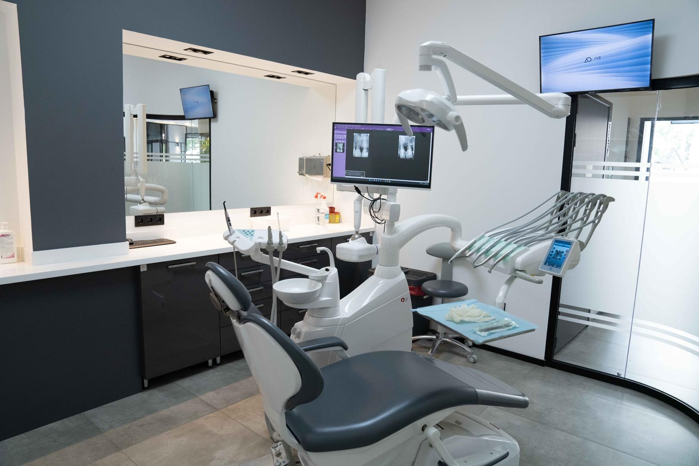
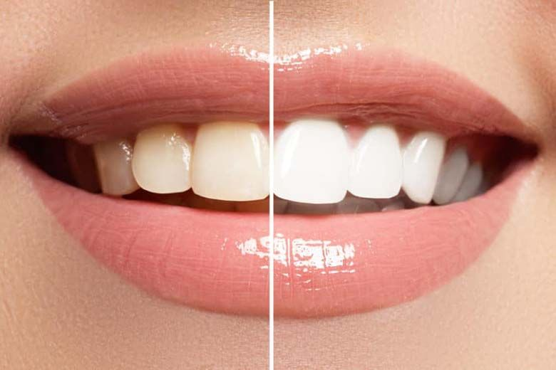
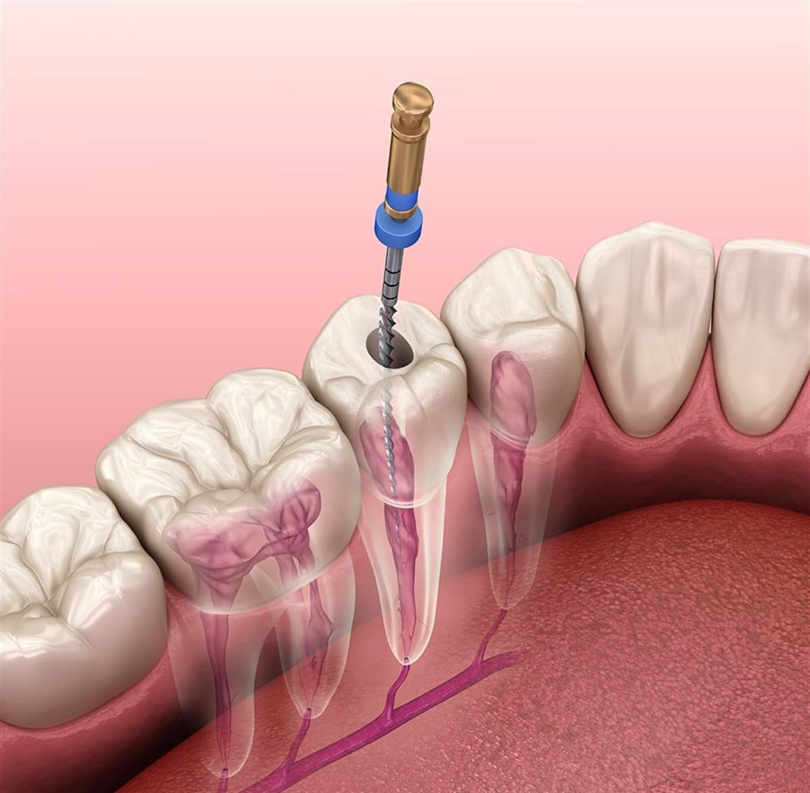

Polikliniğimiz bünyesinde ağız ve diş sağlığı ile ilgili ihtiyacınız
olabilecek tüm teşhis ve tedavi uygulamaları yapılmaktadır.
Polikliniğimize gelen tüm hastaların öncelikle klinik ve radyografik değerlendirmeleri yapılır,
hekimlerimiz tarafından hangi tedavi metotlarının uygulanacağı anlatılır ve gerekli tedavi
gerçekleştirilir. Dent Fs Ağız ve Diş Sağlığı Polikliniği size her konuda en uygun hizmeti
verebilmek adına geniş bir hizmet yelpazesi sunmaktadır.

Dişe, doğal renginin yeniden kazandırılması veya doğal renginden daha da beyaz bir
görünümün elde edilmesidir. Uzman hekimler tarafından üretilen kişiye özel plaklar
kullanılarak, ev beyazlatma sistemleri (Home Bleaching) olduğu gibi, klinikte uygulanan
beyazlatma sistemleri (Office Bleaching) de vardır. Şiddetli renklenmelerde, her iki sistem
birlikte, kombine olarak da uygulanabilmektedir.

Canlılığını yitirmiş, derin çürükleri olan, apseli dişlerin tedavisidir.
Dişin merkezindeki ağrıya sebep olan sinir demetinin bölgeden uzaklaştırılması
ve kanal/kanalların doldurulmasıdır.

İmplant; eksik olan dişlerin yerine foksiyonel ve estetik amaçla çene kemiğine
basit bir operasyonla yerleştirilen çoğunlukla vida şeklinde yapay bir diş köküdür.
İmplantlar titanyumdan yapılmakta olup, çene kemiği titanyumu vücudun bir parçası
olarak algılayarak yüksek doku uyumu sağlanıp, başarı oranı yüksek bir tedavi yöntemidir.
Tek diş eksikliklerinden, hiç dişi olmayan hastalara kadar çok geniş bir yelpazede
uygulanıyor olması nedeniyle diş hekimliğinde yaygın olarak kullanılmaktadır.
Bu uygulama komşu dişlere hiç müdahale edilmeden gerçekleştirilmektedir.